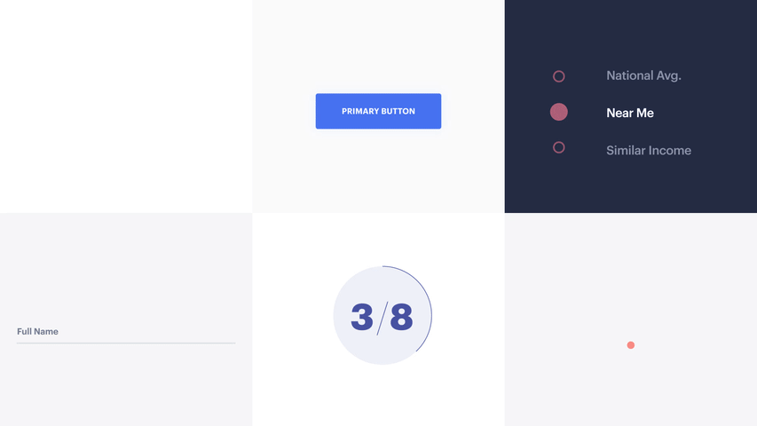
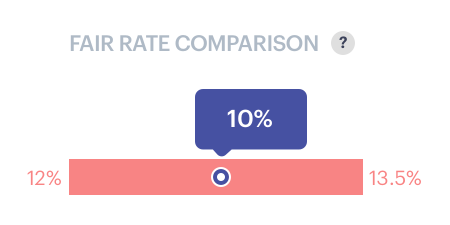
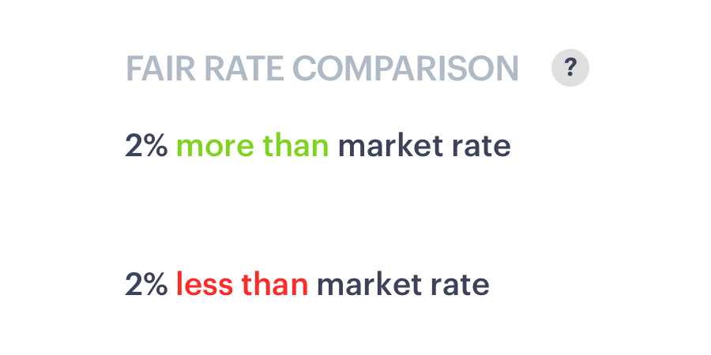

Presenting information clearly
Status Money
Overview
Status Money is a personal finance management platform that allows users to compare their finances with similar peer groups in order to better track their overall financial wellness. I worked on this project while at Elephant, and the project was positioned as a way to test out a new client working relationship. The two key stakeholders and owners of the startup were placed in the office two days out of the week, allowing us to have more informal reviews and consistent daily feedback.
I was brought on to the project primarily to help develop the modular system of data visualizations as the client moved towards building an MVP that could be presented to investors.
I’m going to start out by explaining the basic structure of the site and then review some of the challenges we ran into while developing the data modules.
- 
The Basics
1. Group Filter
The key value add of the product is housed in the side bar Group Filter. By default, the users core “People Like You” peer group was determined by age, income, credit score and asset ownership. Then the user was able to toggle the third comparative group to just people in their area, their income range, etc or build a custom range
2. Category/Time Filter
One each of the internal pages there is an category/time filter allowing the user to see how their finances have evolved over the past month or year.
3. Data Modules
Finally, the core of the product were the data modules. I will get into the different types of graphs and charts we developed but the basic format is that there is a graph attached to a serious of insight cards. The cards presented four different types of information: Tracker, Alert, Offer, or Nice To Know.

Bring on the data
As with many of the modules we developed, it was important to strike a balance of providing helpful, actionable information to the user without overwhelming them. For the debts and liabilities page, one key module we needed was one that showed the user an overview of their liabilities and informed them if they were getting the best rates compared to their peers.
Tabs and Notifications
A. Chart Tabs
Our first stab at denoting the number of your accounts that were eligible for a better rate was to use these circle graphics. This ended up not working so well, as it made it seem like some sort of fraction. Then the user had to some weird backwards thinking in order to figure out why it said 0/2 instead but there was two red notifications. In end we ended up bringing it back but in the iniital layout it really felt confusing
B. Text Notification
We also tried a more text based approach but ran into some issues with readability. Also with the red marks, it made it seem as if there was an error with their accounts
C. Badge Notification
We then moved on to try a more notification badge approach, letting the user know that there was something to be evaluated with their account.
Peer Comparison and View Offers
As we continued to experiment with the best form of notification style, we needed to figure out way to display the peer interest rate with the value of your savings and a CTA to view offers relevant to you
With the full card there were a few questions we needed to answer:
- What peer information would be most helpful in determining the competitiveness of the user's interest rates?
- How do we make clear the total savings the user is missing out on?
In the top right iteration, we wanted to show how the total savings was an exact calculation of all the individual savings from the user's accounts but the placement at the top seemed off. Then in the bottom right iteration we tried separating the information about interest rate from the savings by pulling the savings into the insight car. Pulling it into a side card seemed redundant so we then opted to show the savings in the insight card that was already a part of the design.
Peer Rate Comparison
In the middle of developing this module we recieved legal feedback that we couldn't show just one number for the average peer rate comparison since it was actually a range. As a result we then had to shift our energy into figuring out how to show this additional value that could no longer be simplified down into a single value. So the value we had been showing to the right in the modules needed to be shown more accurately.
We experimented with simplifying and having less data, as well as switching to a text based notification rather than visual
-

Option A: Minimal
-

Option B: Clarified
-

Option C: Plain Language
Fair rate comparison in context
Further Iterations
After presenting the wireframes I worked closely with our visual designer, John Signsbaugh, to develop further visual treatments of the rate comparison as well as the savings total.
End Result
This is the final page. I was happy with the result and think that we solved a lot of the problems
More to come!
This has obviously been more of a breakdown of one of the parts of the site. I hope to do more thorough breakdowns of the onboarding and other processes soon. In the meantime check out the site for yourself at statusmoney.com